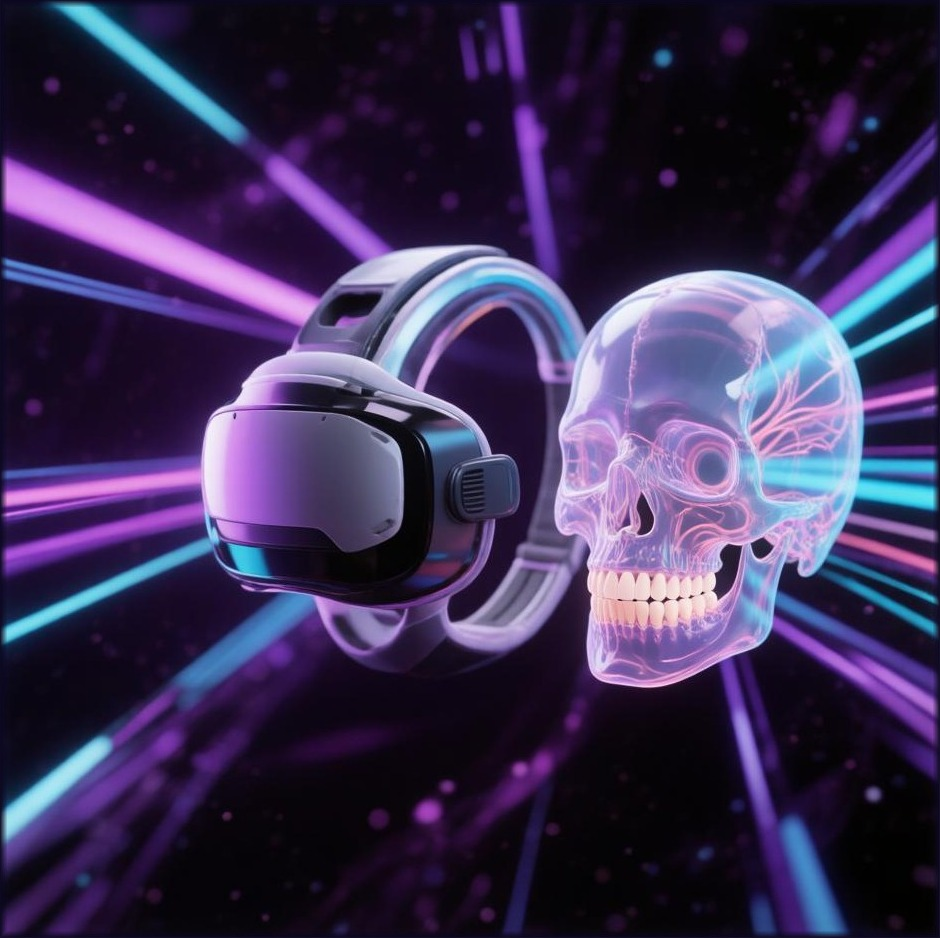
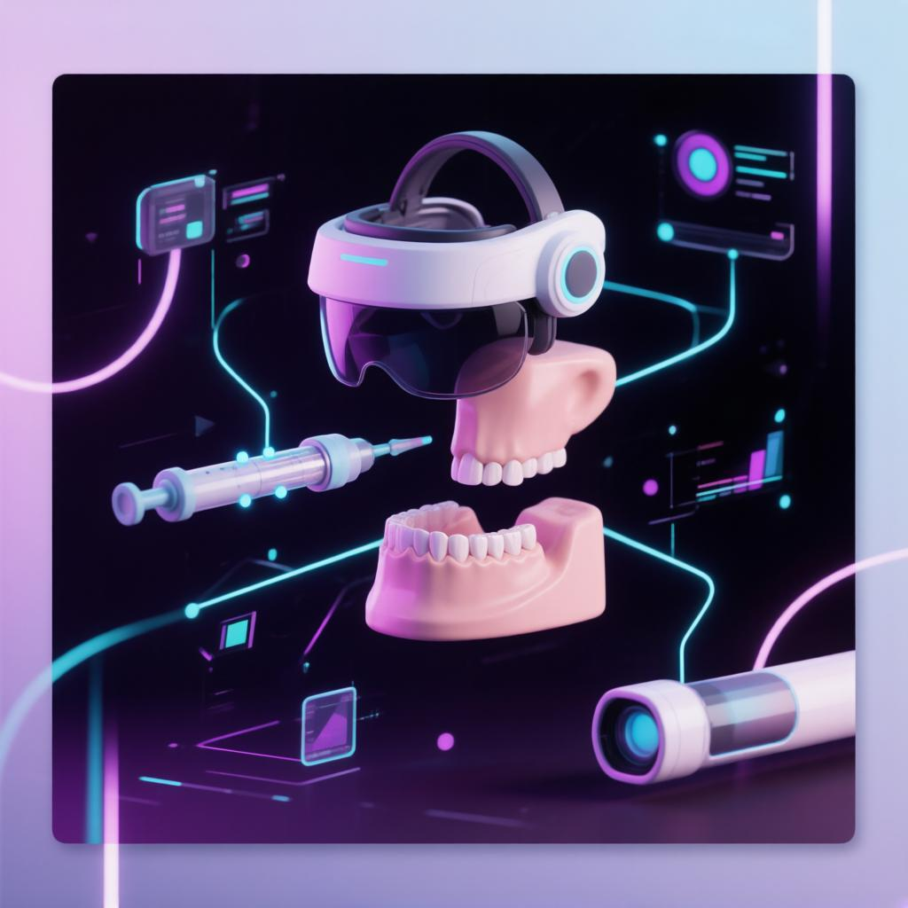
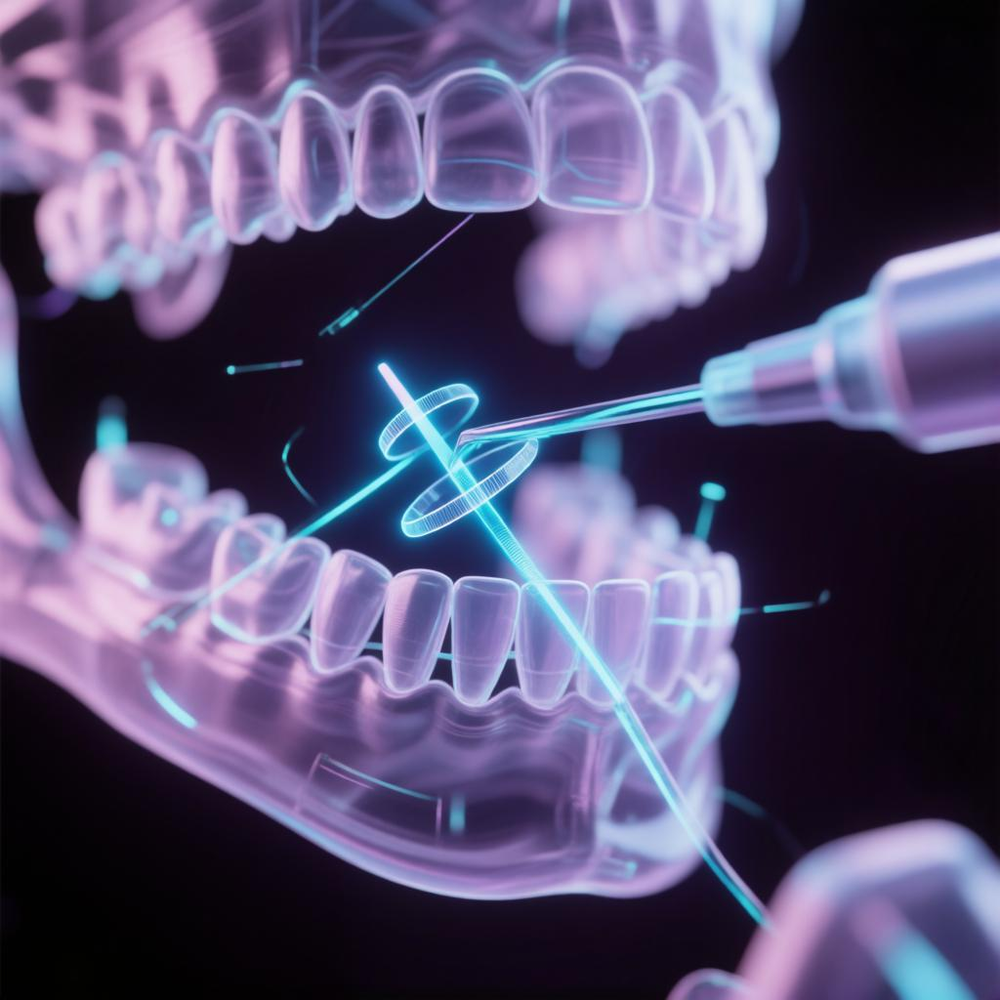

Иммерсивная MR/VR-платформа обучения и объективной оценки мануальных стоматологических навыков

Ошибка техники, а не знаний. Значит, её можно потренировать без риска для пациента
Обучающийся видит свои руки и манекен, а поверх них — кости, нервы и слизистую.
Безопасно: полная отработка навыков без риска для пациента
Реалистично: физический манекен и имитатор карпульного шприца + цифровая 3D-анатомия
Измеримо: внешний трекинг положения шприца через TauTracker
Задел для масштабирования (после НИОКР): интеграция с LMS · облачные отчёты · мультиобъектный трекинг

Единица обучения — одна сессия: от настройки сценария до отчёта с детализацией ошибок
Параметры учебного сценария:
Преподаватель собирает сценарий под свою задачу — от первого знакомства с техникой до аттестации.
положение кончика иглы · глубину · угол · траекторию · стабильность

Автоматизированная оценка по медицинским и техническим критериям, формирование перечня ошибок
📺 Дублирование вида из XR-шлема на монитор в реальном времени
📊 Текущий этап, параметры введения и ошибки
🎛️ Управление сценариями, сложностью, запуск и остановка сессии
Объективный контроль навыка
Практические платные курсы
Онбординг и меньше технических ошибок
Новый модуль учебного оборудования
Для внутреннего контроля навыков и подготовки к аккредитационным процедурам. Привлечение абитуриентов и партнёров через иммерсивные технологии
Грантовый проект: создаём работающий прототип и выводим продукт на регистрацию ПО.
XR-шлем + физический манекен + цифровая анатомия + трекинг шприца + оценка угла, глубины, траектории и зон риска
Гибридный стоматологический симулятор с фантомом, трекингом и цифровой оценкой — без XR и смешанной реальности
VR и тактильные тренажёры. Высокая стоимость, проблемы с импортом, фокус на виртуальной среде
Физическая отработка есть, но скрытая анатомия, траектория иглы и оценка ошибок не измеряются
Ключевое отличие: только наш комплекс совмещает поле зрения обучаемого, реальный манекен и измеримую траекторию иглы
Медицинское образование, MBA. Philips Healthcare, Johnson & Johnson, ICR GROUP. Управление НИОКР, коммерциализация, права на разработку.
К.м.н., врач-стоматолог, челюстно-лицевой хирург, преподаватель РУМ. Медицинская корректность сценариев и зон контроля.
VR/AR/XR-проекты, 3D-визуализация, тестирование и сопровождение ПО. Прототип, трекинг, сценарная логика, документация.
Привлекаем по мере необходимости: XR-разработчик · специалист по 3D-моделированию · инженер по тестированию и интеграции
Концепция депонирована, команда собрана, следующий шаг — работающий прототип и регистрация программы для ЭВМ